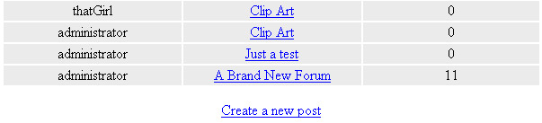

Getting a Page Thread for the Forum
This lesson is part of an ongoing Foruml tutorial. The first part is here: Build your own Forum, along with all the files you need. The previous lesson is here.
When the user clicks on a forum section, they are taken to the pageThread.php page. The page looks like this:
Posts in a Forum Section (opens in a new window - 110K)
If you are logged in as a member, however, you'll won't see that text at the bottom. You'll see this:

Only members are allowed to post topics and reply to others. The alternative is to have an open forum where anyone can post and reply. But this opens the forum to abuse, especially from people who want to spam your forum with lots of hyperlinks advertising their own sites and wares.
The login part of the forum is more or less the same one you met in the first walkthrough. But if you open up the code for pageThread.php (in the forum folder), you'll see a variable near the top of the page called $nonMember. If you're not logged in, the following text is added to the variable:
$nonMember = "YOU NEED TO BE LOGGED IN TO POST (MAKE SURE COOKIES ARE ENABLED IN YOUR BROWSER)";
As an exercise, change this message to anything you like. Then reload the page to see your new message.
If you are logged in as a member, the $nonMember variable will be blank. Later in the code, an if statement will check what is inside of the $nonMember variable. If it's blank, print the link to post a topic; if it's not blank, print the message.
After the session variable is checked, we have this line:
include 'forumHTML.php';
Here, we're including a file that holds all the HTML for the table, and a hyperlink. Open this page up, and you'll see the same table code you met in the main forum. The reason it's in a page of it's own is just to cut down on the amount of code in the pageThread.php page. We could have done the same with the forumTest.php page, but we thought we'd show you both techniques!
Exercise
Change the colours of the table headers for the Posts page, and the colours
for the cells in the table. Change the text in the headers to any colour you
like.
After the include file, we have a function called getPostSQL( ) and one
called getReplySQL( ). These are used to get some SQL, and you'll see
how they work soon. But after the function, we have this:
if ($_SERVER['REQUEST_METHOD'] == 'GET') {
$secCode = '';
if (isset($_GET['sID'])) {
$secCode = $_GET['sID'];
}
}
Here, we're checking to see if the page in the browser was loaded via a hyperlink click or a refresh (GET). If it was, there will be some GET information stored that we can try to retrieve. We're setting up a variable called $secCode. This starts off a being blank:
$secCode = '';
But if our variable from the previous page is set (the sID variable), we can return this into the variable called $secCode. So $secCode is either going to be blank, or it will have one of our five values: secWP, secXL, secVB, secWD, or secPH.
The next line is an if statement:
if ($secCode <> '') {
}
Here, we're checking if the variable called $secCode is not blank. Only if it's not blank will the code for the if statement be executed.
If it is blank, then something went wrong. In which case, the code at the bottom gets executed:
else {
print "Forum Not Available";
}
For the rest of the code, we need to do the following:
- For the rest of the code, we need to do the following:
- Set up an array to hold all the posts
- Find out how many replies there are for each post
- Find out which member posted the thread
- Print the table out
- Print out the login link, or the Non Member information
There's quite a lot to do! Again, though, if you open up the code for pageThread.php you'll see a lot of comments, breaking it down into manageable chunks.
The first four lines to examine are these (the third line spills over into two, on these pages):
$postData[ ] = array();
$replyHTML = "?sid=" . $secCode;
$replyHTML = "<A HREF = postForm.php" . $replyHTML . ">Create
a new post</A>";
$forum = $secCode;
We set up an array called $postData[ ]. This will hold the information about each post. The next two lines set up the "Create a new post" hyperlink. If the member wants to create a new post, you need to pass in which forum section they want to add the post for. Was it the Word section, the Excel section, the VB section, etc? The only thing you need here is whatever is inside of the $secCode variable (secWP, secXL, etc).
The fourth line just passes whatever is inside of the $secCode variable to a new variable called $forum.
The next six lines connect to the database. After that, we have an if statement
to check if the database was found. This is the same code as before.
Set up an array to hold all the posts
Inside of the $db_found if statement, we have our first bit of code from our list: Set up an array to hold all the posts.
The first line is this:
$secCode = getPostSQL($secCode);
This is a call to one of our functions at the top of the page. We're handing the function whatever is inside of the secCode variable. The result of the function will be returned to the same variable ($secCode = ).
If you study the function, you should be able to figure out what it does. But it's just a series of if statements that check what is inside of $sectionCode. Is it secWP, secWD, secVB, secXL or secPH?
Whichever one it is, some SQL gets returned:
$sql = "SELECT * FROM wpposts ORDER BY datePosted DESC";
The only thing that changes is which table we want to pull data from. But notice the ORDER BY clause at the end. This is another SQL command you can use. It sorts results based on a table column that you provide. Here, we want to sort the results based on the datePosted column. We want a descending sort, so we've used DESC. If you want an ascending sort, use ASC.
Exercise
Change DESC to ASC. Save the page, and reload it in your browser. Watch what happens.
After we grab the SQL, we hand it to PHP for processing:
$result = mysql_query($secCode);
If any results are returned, the $result variable will be true. After setting a rows counter to zero, we get the number of rows in a fourm section:
$totalRows = 0;
$totalRows = mysql_num_rows($result);
Next, we check how many rows were returned:
if ($totalRows <> 0) {
}
elseif ($totalRows == 0) {
print "This Forum is not yet available";
}
If the total number of rows is not zero, then the main code is executed. If no rows were returned, we can print out an error message.
The first thing to get executed inside of the new if statement is a for loop:
for ($i = 0; $i < $totalRows; ++$i) {
$postData[$i] = mysql_fetch_array($result);
}
What we're doing here is looping round each row in a database table, and putting the results into an array called $postData. But this is a new type of array - something called a 2D array. As this page is getting a bit too long, we'll continue the lesson in the next part.